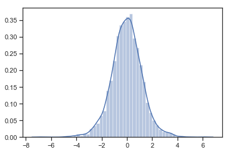
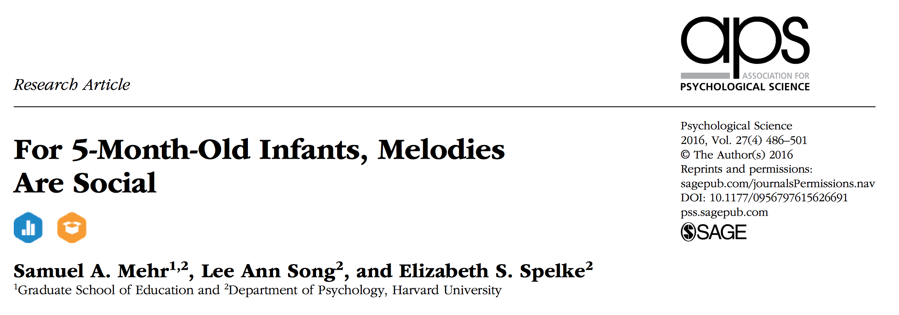
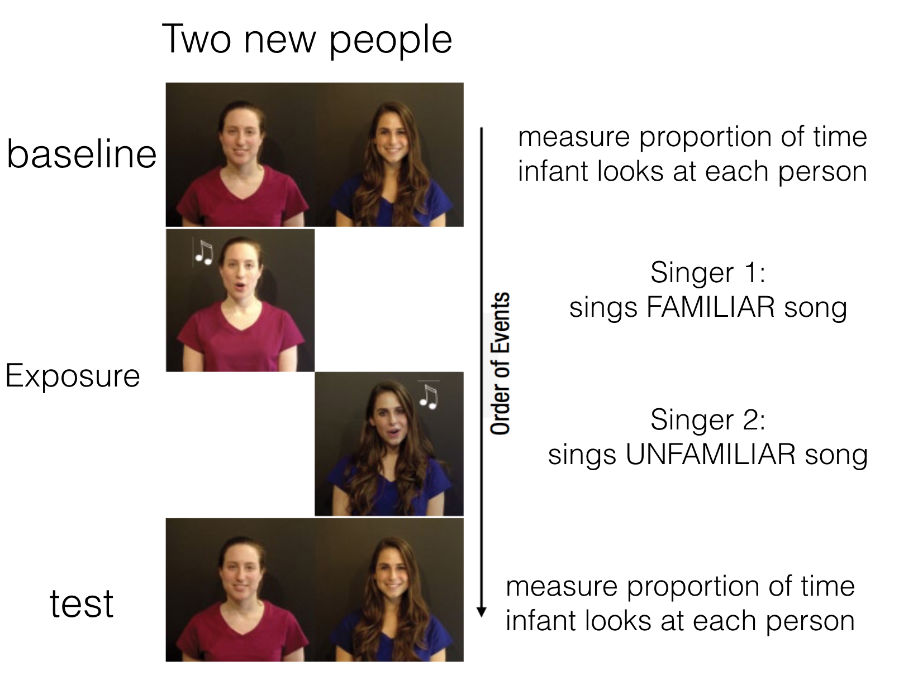
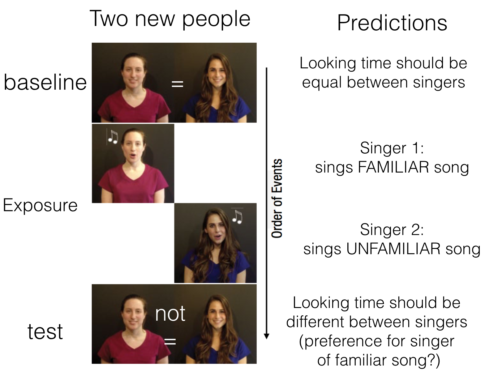
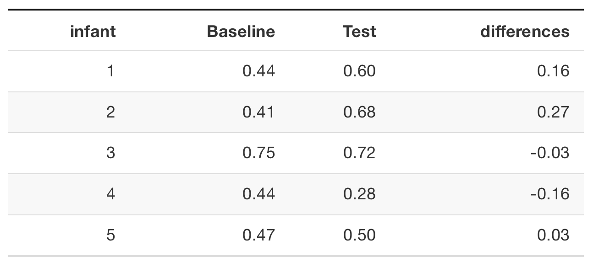
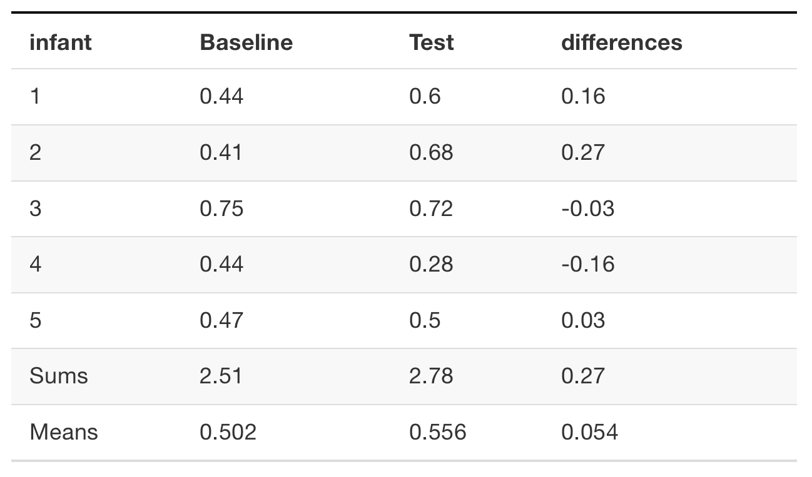
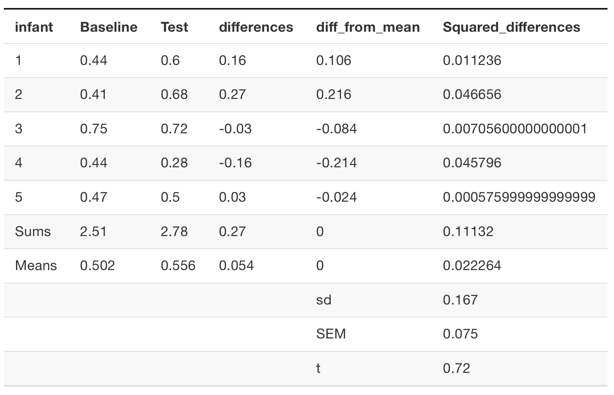

name: title class: middle, center, dark <center> <embed src="images/title.svg" type="image/svg+xml" height="100px" align="center" style="border: 0px solid lightgray;"/> </center> --- class: dark, middle, clear # Agenda 1. Lecture: Comparing one or two means with the Student's t-test 1. Lab: Finish Lab from last time on detection experiment --- class: light, middle, clear # Hypothesis tests about means Many cases in science where we want to tell if the average value of an outcome variable is higher in one group or another. 1. Example: Blood sugar levels in patients on and off a new diabetes medicine 1. Example: Reaction time on a word/non-word task where the trial is either proceeeded by a semantic prime or a blank screen. 1. Example: Is d' higher for high or low contrast gabor patches (sound familiar?) --- class: light # William Sealy Gosset .col1[ - Creator of t-test (1908) - Worked for Guiness breweries, published under a pseuodnym (student) ] .col2[ <img src="https://upload.wikimedia.org/wikipedia/commons/thumb/4/42/William_Sealy_Gosset.jpg/480px-William_Sealy_Gosset.jpg" width="240" /> ] --- class: light # This Class 1. The t statistic 2. Experimental design and t-tests 3. One-sample t-test 4. Two-sample t-test (paired and unpaired) --- class: light # Common ratio in inferential stastics Many inferential statistics have a common form .center[ `\(\text{Inferential statistic}=\frac{\text{Measure of Effect}}{\text{Measure of Error}}\)` ] 1. Measure of effect = Some measure of the pattern in data 1. Measure of error = Some measure of random fluctuation in the data --- class: light # t-statistic (big idea) (FYI, no one really knows what t stands for...) .center[ `\(t = \frac{\text{Mean}}{\text{Standard Error of the Mean}}\)` ] **Why would anyone bother dividing a mean by the SEM?** --- class: light # Confidence in mean <table> <thead> <tr> <th style="text-align:right;"> Mean </th> <th style="text-align:right;"> SEM </th> <th style="text-align:right;"> t </th> </tr> </thead> <tbody> <tr> <td style="text-align:right;"> 5 </td> <td style="text-align:right;"> 0.1 </td> <td style="text-align:right;"> 50.0 </td> </tr> <tr> <td style="text-align:right;"> 5 </td> <td style="text-align:right;"> 0.5 </td> <td style="text-align:right;"> 10.0 </td> </tr> <tr> <td style="text-align:right;"> 5 </td> <td style="text-align:right;"> 1.0 </td> <td style="text-align:right;"> 5.0 </td> </tr> <tr> <td style="text-align:right;"> 5 </td> <td style="text-align:right;"> 5.0 </td> <td style="text-align:right;"> 1.0 </td> </tr> <tr> <td style="text-align:right;"> 5 </td> <td style="text-align:right;"> 10.0 </td> <td style="text-align:right;"> 0.5 </td> </tr> </tbody> </table> --- class: light # The sampling distribution of t 1. Take a sample of size n from a normal population 2. Compute t 3. Repeat many times 4. Plot the distribution <img src="https://upload.wikimedia.org/wikipedia/commons/thumb/3/38/Jupyter_logo.svg/663px-Jupyter_logo.svg.png" width="75"> - Exercise 1 --- class: light # Simulating the t distribution ```python ts=[] for _ in range(4000): r_sample = np.random.normal(0,1,10) sem = np.std(r_sample)/np.sqrt(len(r_sample)) t_stat = np.mean(r_sample)/sem ts.append(t_stat) sns.distplot(ts) ```  --- class: light # Formula for t-distribution <img src="figs-crump/ttest/tdist.png" width="768" /> --- class: light # who needs that crap? .col1[ - shaped like a normal - **but**, more spread out - depends on sample-size (df) - blue is normal(0,1) - red is t(df=1) - green is t(df=2, and df=3) ] .col2[ <img src="figs-crump/ttest//tdist2.png" width="344" /> ] --- class: light # Comparing to the normal Not that different when the sample size gets big (N=10) but for smaller samples there is a difference <img src="http://gureckislab.org/courses/fall19/labincp/images/chapters/11/00-ttest_43_0.png" width="650"> --- class: light # ts and ps .col1[ - t-distribution with 300 degrees of freedom - one-sided test - Only 5% of ts are larger than 1.64 --- - t-dist with 9 degrees of freesom - one sided test - only 5% of ts are larger than 1.833 ] .col2[ <img src="http://gureckislab.org/courses/fall19/labincp/images/chapters/11/00-ttest_19_0.png" width="350"> <img src="https://upload.wikimedia.org/wikipedia/commons/thumb/3/38/Jupyter_logo.svg/663px-Jupyter_logo.svg.png" width="75"> - Exercise 2 ] --- class: light # Three kinds of t-tests 1. one-sample 2. paired-sample 3. Independent sample --- class: light # One-sample t-test Purpose: Compare sample mean to a hypothetical population mean <img src="http://gureckislab.org/courses/fall19/labincp/images/chapters/11/00-ttest_40_0.png" width="750"> --- class: light # Paired-sample t-test Purpose: Compare two sample means in a within-subjects design Within-subjects design: Same subjects are measured across both levels of the experimental manipulation (independent variable) <img src="http://gureckislab.org/courses/fall19/labincp/images/chapters/11/00-ttest_40_0.png" width="750"> --- class: light # Independent-sample t-test Purpose: Compare two sample means in a between-subjects design Between-subjects design: Different subjects are measured across both levels of the experimental manipulation (independent variable) <img src="http://gureckislab.org/courses/fall19/labincp/images/chapters/11/00-ttest_63_0.png" width="750"> --- class: dark, center, middle, clear # One-sample t-test --- class: light # One-sample t-test .col1[ Purpose: Compare sample mean to a hypothetical population mean - `\(\bar{X}\)` = sample mean - `\(u\)` = hypothetical population mean - `\(s\)` = sample standard deviation (divide by n-1) - `\(n\)` = sample-size ] .col2[ `\(t = \frac{\bar{X}-u}{\text{SEM}}\)` `\(t = \frac{\bar{X}-u}{\frac{s}{\sqrt{n}}}\)` `\(s = \sqrt{\frac{\sum{(x_i-\bar{X})^2}}{N-1}}\)` ] --- class: light # An example .col1[ Question: What population did this sample come from? ```python np.mean(scores) ``` ```python 0.704 ``` ```python np.std(scores) ``` ```python 0.1681666 ``` ] .col2[ subjects scores --------- ------- 1 0.50 2 0.56 3 0.76 4 0.80 5 0.90 ] --- class: light # Best guesses Remember 1. The sample mean is our best estimate of the population mean 2. The sample standard deviation (dividing by N-1) is our best estimate of the population standard deviation --- class: light # One possibility .col1[ .font70[Our sample statistics are consistent with the data coming from a normal distribution with the following mean and standard deviation] ```python np.mean(scores) ``` ```python 0.704 ``` ```python np.std(scores) ``` ```python 0.1681666 ``` ] .col2[ subjects scores --------- ------- 1 0.50 2 0.56 3 0.76 4 0.80 5 0.90 ] --- class: light # Testing other possibilities The one sample t-test allows us to test other possibilities. For example: Could the data have come from a normal distribution with... - mean = .25 - mean = .5 - mean = .75 --- class: light # Conducting the t-test Steps: 1. Compute the observed t-value `\(t_\text{observed}\)` 2. Set alpha criteria (p <. 05) 3. We will conduct a directional test 4. Find the probability that t could be `\(t_\text{observed}\)` or larger <img src="https://upload.wikimedia.org/wikipedia/commons/thumb/3/38/Jupyter_logo.svg/663px-Jupyter_logo.svg.png" width="75"> - Exercise 3 --- class: light # Computing t for one-sample test Could the scores have come from a normal distribution with mean =.25? `\(t = \frac{\bar{X}-u}{\frac{s}{\sqrt{n}}}\)` ```python scores=np.array([.5,.56,.76,.8,.9]) effect=(np.mean(scores)-.25) error=np.std(scores, ddof=1)/np.sqrt(5) t=effect/error t ``` ```python 6.036722 ``` --- class: light # Compute the associated p-value Use stats.t.cdf(), df (degrees of freedom) is n-1. ```python import scipy.stats as stats stat.t.cdf(t,df=4) # left side ``` ```python 0.9981017 ``` ```python 1.0-stat.t.cdf(t,df=4) # right side ``` ```python 0.001898315 ``` --- class: light # Looking at the evidence - Our sample mean was 0.704 - Observed t was 6.0367217 - The associated p was 0.0018983 What does this mean? The probability that our sample mean (or greater) came from normal distribution with (mean =.25, sd = 0.1681666) is 0.0018983. --- class: light # Making a decision Write up of results: We conducted a one sample t-test comparing the sample mean (0.704) against a population mean of .25, t(4) = 6.04, p = 0.0019. Our conclusion - We set an alpha criteria of p<.05. We reject the hypothesis that our sample mean came from a normal population with mean =.25, and sd = 0.17. --- class: light # pingouin ttest() The python library pinouin has a nice and easy t-test function that lets you do all three kinds of t-tests. Here is how you conduct a one-sample t-test using the function. ```python import pingouin as pg scores=np.array([.5,.56,.76,.8,.9]) pg.ttest(x=scores, y=0.25, tail='one-sided') ``` - alternative="one-sided" specifies a directional test: to find probability of t or greater or lesser (detects side automatically) - alternative="t-sided" non direction test with area on both sides (more conservative) <img src="https://upload.wikimedia.org/wikipedia/commons/thumb/3/38/Jupyter_logo.svg/663px-Jupyter_logo.svg.png" width="75"> - Exercise 4 --- class: light # ttest() output ```python import pingouin as pg scores=np.array([.5,.56,.76,.8,.9]) pg.ttest(x=scores, y=0.25, tail='one-sided') ``` ``` T dof tail p-val CI95% cohen-d BF10 power T-test 6.037 4 greater 0.001898 [0.29, inf] 2.7 28.44 0.999 ``` --- class: light # testing u =.5 ```python import pingouin as pg scores=np.array([.5,.56,.76,.8,.9]) pg.ttest(x=scores, y=0.5, tail='one-sided') ``` ``` T dof tail p-val CI95% cohen-d BF10 power T-test 2.713 4 greater 0.026699 [0.04, inf] 1.213 4.235 0.72 ``` --- class: light # testing u =.75 ```python import pingouin as pg scores=np.array([.5,.56,.76,.8,.9]) pg.ttest(x=scores, y=0.75, tail='one-sided') ``` ``` T dof tail p-val CI95% cohen-d BF10 power T-test -0.612 4 less 0.286913 [-inf, 0.11] 0.274 0.923 0.129 ``` --- class: light # Extracting values The `t.test()` function generates a bunch of output, sometime you might want to to extract the t-value, and the p-value. ```python 'T' : T-value 'p-val' : p-value 'dof' : degrees of freedom 'cohen-d' : Cohen d effect size 'CI95%' : 95% confidence intervals of the difference in means 'power' : achieved power of the test ( = 1 - type II error) 'BF10' : Bayes Factor of the alternative hypothesis ``` ```python res['T'] ``` ```python T-test -0.612 Name: T, dtype: float64 ``` --- class: dark, center, middle, clear # Thinking ahead to paired samples-test --- class: light # Consider this Within-subjects experiment, n=5, all subjects are measured in level A and B of the experiment. <table> <thead> <tr> <th style="text-align:right;"> subjects </th> <th style="text-align:right;"> level_A </th> <th style="text-align:right;"> level_B </th> </tr> </thead> <tbody> <tr> <td style="text-align:right;"> 1 </td> <td style="text-align:right;"> 1 </td> <td style="text-align:right;"> 4 </td> </tr> <tr> <td style="text-align:right;"> 2 </td> <td style="text-align:right;"> 4 </td> <td style="text-align:right;"> 8 </td> </tr> <tr> <td style="text-align:right;"> 3 </td> <td style="text-align:right;"> 3 </td> <td style="text-align:right;"> 7 </td> </tr> <tr> <td style="text-align:right;"> 4 </td> <td style="text-align:right;"> 6 </td> <td style="text-align:right;"> 9 </td> </tr> <tr> <td style="text-align:right;"> 5 </td> <td style="text-align:right;"> 5 </td> <td style="text-align:right;"> 10 </td> </tr> </tbody> </table> --- class: light # Empirical question Did the manipulation (A vs. B) cause a difference in the measure? <table> <thead> <tr> <th style="text-align:right;"> subjects </th> <th style="text-align:right;"> level_A </th> <th style="text-align:right;"> level_B </th> </tr> </thead> <tbody> <tr> <td style="text-align:right;"> 1 </td> <td style="text-align:right;"> 1 </td> <td style="text-align:right;"> 4 </td> </tr> <tr> <td style="text-align:right;"> 2 </td> <td style="text-align:right;"> 4 </td> <td style="text-align:right;"> 8 </td> </tr> <tr> <td style="text-align:right;"> 3 </td> <td style="text-align:right;"> 3 </td> <td style="text-align:right;"> 7 </td> </tr> <tr> <td style="text-align:right;"> 4 </td> <td style="text-align:right;"> 6 </td> <td style="text-align:right;"> 9 </td> </tr> <tr> <td style="text-align:right;"> 5 </td> <td style="text-align:right;"> 5 </td> <td style="text-align:right;"> 10 </td> </tr> </tbody> </table> <img src="https://upload.wikimedia.org/wikipedia/commons/thumb/3/38/Jupyter_logo.svg/663px-Jupyter_logo.svg.png" width="75"> - Exercise 5 --- class: light # Difference scores How could a one-sample t-test be used to analyze the difference scores? <table> <thead> <tr> <th style="text-align:right;"> subjects </th> <th style="text-align:right;"> level_A </th> <th style="text-align:right;"> level_B </th> <th style="text-align:right;"> differences </th> </tr> </thead> <tbody> <tr> <td style="text-align:right;"> 1 </td> <td style="text-align:right;"> 1 </td> <td style="text-align:right;"> 4 </td> <td style="text-align:right;"> 3 </td> </tr> <tr> <td style="text-align:right;"> 2 </td> <td style="text-align:right;"> 4 </td> <td style="text-align:right;"> 8 </td> <td style="text-align:right;"> 4 </td> </tr> <tr> <td style="text-align:right;"> 3 </td> <td style="text-align:right;"> 3 </td> <td style="text-align:right;"> 7 </td> <td style="text-align:right;"> 4 </td> </tr> <tr> <td style="text-align:right;"> 4 </td> <td style="text-align:right;"> 6 </td> <td style="text-align:right;"> 9 </td> <td style="text-align:right;"> 3 </td> </tr> <tr> <td style="text-align:right;"> 5 </td> <td style="text-align:right;"> 5 </td> <td style="text-align:right;"> 10 </td> <td style="text-align:right;"> 5 </td> </tr> </tbody> </table> --- class: light # Paired samples t-test .col1[ Purpose: Compare two means from paired samples - $$\bar{X}_D$$ = mean of difference scores - $$u_0$$ = hypothetical population mean of 0 - $$s_D$$ = sample standard deviation of difference scores (divide by n-1) - $$n$$ = sample-size ] .col2[ $$t = \frac{\bar{X_D}-u_0}{\text{SEM}_D}$$ $$t = \frac{\bar{X_D}-u_0}{\frac{s_D}{\sqrt{n}}}$$ $$s = \sqrt{\frac{\sum{(x_i-\bar{X})^2}}{N-1}}$$ ] --- class: light # In other words .col1[ A paired samples t-test is a one-sample t-test applied to the difference scores We are testing the null-hypothesis that the differences have a mean of 0 (u=0). ] .col2[ Observed $$t$$ for paired samples test: $$t = \frac{\text{Mean of Difference scores}}{\text{SEM of Difference scores}}$$ ] --- class: light # Calculating Difference scores Assume 5 subjects participated in both conditions (A and B) of an experiment. ```python exp_df = pd.DataFrame({"subjects": [1,2,3,4,5], "level_A": [1,4,3,6,5], "level_B": [4,8,7,9,10]}) exp_df['differences']=exp_df['level_B']-exp_df['level_A'] ``` ```python subjects level_A level_B differences 0 1 1 4 3 1 2 4 8 4 2 3 3 7 4 3 4 6 9 3 4 5 5 10 5 ``` --- class:light # Calculating Mean and SEM ```python # Calculate Mean exp_df['differences'].mean() ``` ```python 3.8 ``` ```python # Calculate SEM exp_df['differences'].std(ddof=1)/np.sqrt(exp_df['differences'].count())) ``` ```python 0.3741657386773941 ``` --- class: light # Calculate t (paired samples) ```python mean_D = exp_df['differences'].mean() SEM_D = exp_df['differences'].std(ddof=1)/np.sqrt(exp_df['differences'].count())) # calculate t mean_D/SEM_D ``` ``` 10.155927192672127 ``` --- class: light # using the `ttest()` function There are two ways to use the pingouin ttest() function to calculate t for paired samples 1. Treat the data as difference scores ```python import pingouin as pg pg.ttest(x=exp_df['differences'], y=0, tail='one-sided') ``` --- class: light # using the `ttest()` function 2. Use both variables for each sample, and set `paired=TRUE` ```python import pingouin as pg pg.ttest(x=exp_df['level_A'], y=exp_df['level_B'], paired=True, tail='one-sided') ``` Note: t is (-) here because the ttest formula computes the differences as the first variable minus the second variable. --- class: light # Mehr, Song, and Spelke (2016)  --- class: light # Research question Do infants use melodies as a cue about social interaction? If an infant heard and watched an unfamiliar adult singing a familiar melody, would they pay more attention to that person (by looking at them)? --- class: light # Study design  --- class: light # Study predictions  --- class: light # Data from first 5 infants  --- class: light # Means  --- class: light # observed t  --- class: light # python code ```python baseline = np.array([.44,.41,.75,.44,.47]) test = np.array([.6,.68,.72,.28,.5]) ``` --- class: light # r results (two-tailed) ``` import pingouin as pg pg.ttest(test,baseline,paired=True) ``` ```python T dof tail p-val CI95% cohen-d BF10 power T-test 0.724 4 two-sided 0.50925 [-0.15, 0.26] 0.342 0.488 0.092 ``` --- class: light # Interpretation (two-tailed) The results from the two-tailed test were: - t(4) = .723, p = .5092 Interpretation: - p is the probability that the null-distribution produces an **absolute value** of t=.723 or larger - 50.92% of t-values from the null-distribution (assuming no difference) are larger than .723, and smaller than -.723. --- class: light # r results (one-tailed) ```python baseline = np.array([.44,.41,.75,.44,.47]) test = np.array([.6,.68,.72,.28,.5]) import pingouin as pg pg.ttest(test,baseline,paired=True,tail='one-sided') ``` ``` T dof tail p-val CI95% cohen-d BF10 power T-test 0.724 4 greater 0.254625 [-0.11, inf] 0.342 0.977 0.158 ``` --- class: light # Interpretation (one-tailed) The results from the one-tailed test were: - t(4) = .723, p = .2546 Interpretation: - p is the probability that the null-distribution produces a value of t=.723 or larger - 25.46% of t-values from the null-distribution (assuming no difference) were larger than .723. --- class: light # Increasing N We only looked at data from the first 5 infants... We found that the observed t-value could easily have been produced by chance, and we did not reject the null-hypotheses (p-values were not less than .05) Let's see what happens when we use all of the data <img src="https://upload.wikimedia.org/wikipedia/commons/thumb/3/38/Jupyter_logo.svg/663px-Jupyter_logo.svg.png" width="75"> - Exercise 6 --- class: light # results using all of the data ``` T dof tail p-val CI95% cohen-d BF10 power T-test -2.416 31 two-sided 0.021753 [-0.13, -0.01] 0.407 2.297 0.607 ``` --- class: dark, center, middle, clear # independent samples t-test --- class: light # how to in python ```python baseline = np.array([.44,.41,.75,.44,.47]) test = np.array([.6,.68,.72,.28,.5]) import pingouin as pg pg.ttest(test,baseline,paired=False,tail='one-sided') ``` We don't have time today to go over all the theory in class (check the textbook reading for a very nice summary of it all.) Basically the mechanics are the same except we use a "pooled estimate" of the standard deviation from the two groups and the numerator of the t-stat is the difference in means between the two groups. paired=False is the simple way! --- class: light, center # FIRE UP JUPYTERHUB